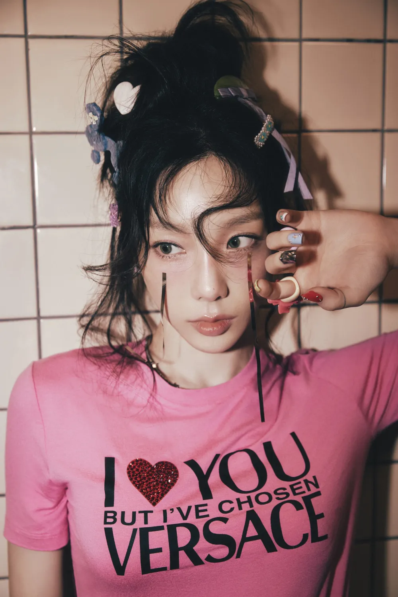

To . X
: 불건강했던 사랑에게
우리가 사랑하면서 나는 세상과 멀어지고 오로지 너와만 가까웠다. 단절된 채 너라는 소리에만 의지하며 너만을 알아갔다. 너만 아는 나를 쥐고 사랑으로 가장한 채 상처만을 안겨준 너때문에 모든 것이 불에 타버린 듯 망가져 버렸지만 원망하는 법조차 잃고 여전히 어리석은 나는 화난 듯 여전히 차갑게만 구는 너를 녹일 수 있는 방법만을 찾았다.
너가 나를 사랑하는 방법이 통제였다는 걸 깨닫는 그 순간부터 관계는 조금씩 균열이 난다.

잃어버린 원망의 방법을 찾았다. 나를 다시 찾아가기 시작한다. 너를 녹일 수 있는 방법은 애초에 없었다. 너를 화내게 한 적조차 없으니까.
관계는 끝났다. 미련없이 떠난다.

상처에 새살이 돋는다.

오롯이 내 이야기로만 빼곡히 채운 일기를 한 장씩 늘려간다.
얇은 종이가 두터워져 아무리 손을 잘못놀려도 베이지 않을 정도가 되었다. 마침내 너에게서 완전히 떠났다.